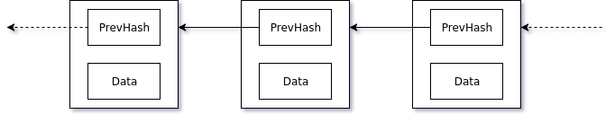

class: center, middle, inverse # Bitcoin ### Vicente Dragicevic --- # ¿Bitcoin? ¿Se come? -- *"Bitcoin: A Peer-to-Peer Electronic Cash System"* -- * Red Peer-to-Peer (conección a través de los **wallets**) -- * Moneda digital (bitcoin) -- * Libro de contabilidad **distribuido**, **descentralizado** e **inmutable** --- class: center, middle, inverse # Basics --- layout: true # Basics --- -- ## Direcciones -- * Para generar una dirección: -- 1. Generar llave privada aleatoria (256 bits) -- 2. Computar llave pública (curvas elípticas) -- * Firmas digitales --- -- ## Transacciones -- Contienen (entre otros) una lista de **inputs** y una lista de **outputs**. -- * Output: -- * Cantidad de *satoshis* -- * **locking script** (ScriptPubKey) -- * Input: -- * Apunta a un **output no gastado** -- * **unlocking script** (ScriptSig) --- ## Transacciones -- Creamos una transacción. ¿Y ahora qué? -- ¿Quién decide lo que se agrega al historial? --- -- ## Mining (idea general) -- Objetivos: -- * Descentralizar la creación de monedas -- * Generar confianza sobre la validez de las transacciones --- ## Mining (idea general) -- Competencia entre los *miners*: -- * Elegir un grupo de nuevas transacciones y verificarlas -- * Empaquetar transacciones en un *bloque* -- * Resolver problema criptográfico para *validar el bloque* -- Ganador hace broadcast del bloque y recibe una recompensa. -- Dificultad del problema se ajusta dinámicamente (alguien gana cada 10 minutos). --- class: center, middle, inverse layout: false # Deep Dive --- # Componentes principales: -- * Blockchain -- * Mecanismos de consenso --- class: center, middle, inverse # Deep Dive ## Blockchain --- # Blockchain -- * Cadena de bloques... -- * Cada bloque almacena el **hash** del bloque anterior --  --- layout: true # Blockchain (Bitcoin) --- -- En Bitcoin, cada bloque contiene: -- * Block Size -- * Block Header (metadatos) -- * Transaction Counter -- * Transactions --- -- ## Header -- * Version -- * Previous Block Hash (SHA256) -- * Merkle Root (Merkle Tree de transacciones) -- * Timestamp -- * Difficulty Target -- * Nonce --- -- <img src="./assets/images/bitcoin_blockchain.png" style="width: 1000px"/> --- class: center, middle, inverse layout: false # Deep Dive ## Mecanismos de Consenso --- # "La cadena más difícil de producir" -- ¿Cómo sabemos si nuestro blockchain es el "real"? -- Todos los nodos tomarán como válida a **la cadena más difícil de producir**. --- layout: true # Mining --- -- ## Objetivos (recordatorio): -- * Descentralizar la creación de monedas -- * Generar confianza sobre la validez de las transacciones --- -- 1. Seleccionar transacciones que **no** han sido agregadas -- 2. **Verificar** transacciones -- 3. Crear transacción de recompensa -- 4. Empaquetar transacciones en un bloque -- 5. while(TRUE) *// Proof of Work* -- * h = hash(block.header); -- * if (h < target) break; -- * else **block.header.nonce**++; -- 6. El bloque es **válido** --- -- * Broadcast del bloque validado -- * Para comprobar validez del bloque, computar el hash del header y comparar al *target* -- * Los otros *miners* deben volver a empezar --- -- ## Puntos importantes -- * La recompensa que reciben los miners disminuye con el tiempo -- * Probabilidad de minar un bloque = capacidad de computo del miner / capacidad total de la red --- layout: false # Mining: Forks -- ¿Qué pasa si más de un miner encuentra un bloque válido al mismo tiempo? -- * Nodos aceptan el primer bloque que reciben -- * Existirán 2 (o más) versiones del blockchain -- * Eventualmente se resuelve, cuando una de las versiones supere a las demás -- <img src="./assets/images/fork.svg" style="width: 800px"/> --- class: center, middle, inverse layout: false # Ataques --- layout: true # Ataques --- class: center --- -- Si un adversario posee más del 50% de la capacidad de cómputo total de la red, creará bloques válidos más rápido que todo el resto de la red. -- Pero mientras crea los bloques, la cadena original sigue creciendo. --- -- Pero... -- yo quería ser millonario :'( -- Difícil... se estima que para el mining se gastan **~11 terawatt horas** de electricidad al año. -- Para el Large Hadron Collider se gastan **~1.3 terawatt horas** al año. --- layout: false class: center, middle, inverse # Fin!